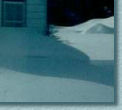

|  |
Now that the table border has been turned on, you can see where it was divided into nine pieces. I also added a bit of padding between the pieces to make the divisions more obvious.
When you are done here, you can return to the main page for this lesson.
Graphics and text Copyright © 2006, Irene Smith. All rights reserved.